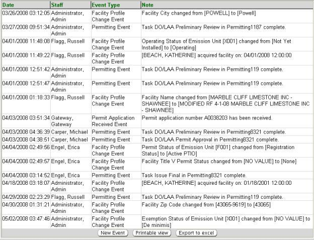

Previous Topic
Next Topic
| Facilities
|
Previous Topic |
Next Topic |
The system’s Event Logs page, available from the third-level menu of the Facilities tab, allows you to view a summary datagrid of events associated with a facility. This could be the completion of a task by internal Ohio EPA staff associated with a permit (e.g., preliminary completeness review) or even a submittal of an application from an external user.
The facility will have access to view an Event Log just like the one internal Ohio EPA staff view. This log gives yourself and the facility the opportunity to see; for example, at what stage in the process a permit application is. Once an event, such as the completion of a task by Ohio EPA staff, is completed and the Event Log is updated by the system, pre-determined “major” events will also be communicated to the facility via an ALERT sent out to the eBusiness Gateway. Therefore, the facility will have the opportunity to see the events and know what tasks have been completed in the permitting process, invoicing, etc.
Ohio EPA staff also have the opportunity to create a New Event that will be posted in both the internal system and the external Air Services system of the facility.
The following datagrid of information will appear when you access the third-level menu, Event Logs:

Ohio EPA staff have the ability to create a New Event that will be posted in both the internal system and the external IMPACT system of the facility by clicking on the New Event button at the bottom of the datagrid. A pop-up will be generated where you will enter a Note and click Save to proceed with the information being updated in the Events Log, or click Cancel to abort the process.
Information from the Event Logs list may be viewed, exported
to Excel
or printed. By clicking  you may view and print. By clicking
you may view and print. By clicking  a pop-up
will appear in which you must click Open in order to view the
information in Excel.
a pop-up
will appear in which you must click Open in order to view the
information in Excel.
Copyright © 1996, 2004, Oracle. All rights reserved.